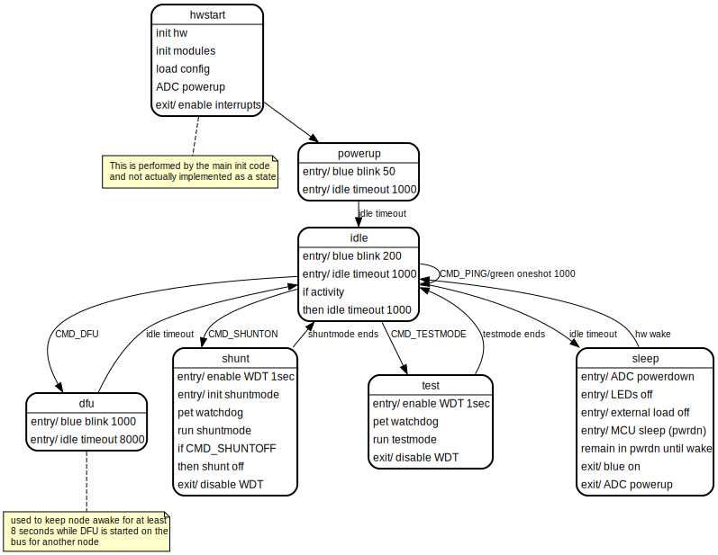

-
Generated on Wed Jan 22 2025 15:43:06 for BMSNode by
 1.11.0.
Dark theme by Tilen Majerle. All rights reserved.
1.11.0.
Dark theme by Tilen Majerle. All rights reserved.
|
BMSNode
BMS Node Cell Monitoring Firmware
|
This is an informal design document to collect various notes about the BMSNode firmware design.
The firmware is written in C and compiled using avr-gcc. Toolchain binaries are available from Microchip and other places. You can also get the AVR toolchain as a plugin for platformio.
Makefiles are used extensively wherever automation scripting is useful. Most non-embedded tooling is written in Python (3). Look in Makefiles first to see how to use various automation scripts. Also look at README files for sometimes useful information.
The development environment is assumed to be POSIX-like with normal development tools and bash shell (other shells may work). Almost all steps are done using command line tools.
Firmware is unit tested (in the host environment) using Catch2 and Fake Function Framework. During unit test code coverage data is generated using the compiler built-in profiling and reports generated using gcovr. Code quality checking is performed using cppcheck. See the Makefile in the repository ./test subdirectory for available test operations.
GitLab CI is used for continuous integration. Each time the repository is pushed to GitLab, the firmware is built and all automated tests are run, documentation is built, and preliminary release notes and release package is generated. Tagged releases are also made using GitLab CI and assisted by go-semrel-gitlab. A purpose-built docker image is used for CI automation. See the ./build/docker subdirectory for details.
BMSNode firmware runs on an ATTiny1614 AVR microcontroller (as of v3 boards, prior versions used ATTiny841).
The firmware makes use of the following peripherals:
The firmware makes use of a boot loader to allow field updates of the application. The boot loader is a variant of optiboot_x. See the subdirectory ./build/bootloader/optiboot_x for details. The optiboot_x boot loader uses a little less than 512 bytes at this time and occupies the two lowest pages in flash, in the "boot" section.
The firmware follow the typical embedded application pattern of using a main loop to run the various processes and a simple state machine to track the device functional states.
When the program starts it initializes the hardware execution environment (hardware peripheral registers) and various module components (software init). After that it enters a forever loop.
There are some interrupt handlers to perform some processing in interrupt context. These are mainly the serial UART and a hardware tick timer.
At the top of the loop, several modules _run() function is called. These are non-blocking calls that allow the module to perform unit(s) of processing as non-interrupt code.
The background processes (called from the top of main loop) can generate events such as timer timeouts, incoming commands, and sensor thresholds (such low voltage or high temperature). Any events that are generated are then passed to a state machine.
The rest of the main loop is implemented as a state machine with handler code for each state.
Hardware timer TCB0 is used to generate a 1 millisecond tick using an interrupt. The interrupt handler increments a 16-bit counter, providing the ability to count up to 65535 milliseconds. However, to implement 16-bit timer comparison math, the maximum timeout for the 1-millisecond timer is 32767 milliseconds. The hardware timer code is part of the tmr module (see below).
Hardware interrupts are used for receiving and transmitting serial data. The MCU UART peripheral support half duplex in hardware and uses a shared pin. The firmware is usually listening in receive (RX) mode. It will transmit when there is a command requiring a response.
The receive interrupt receives any incoming bytes and passes the byte to the packet parser (see pkt module). The packet parser assembles packets from the incoming serial data.
The transmit ready interrupt is used to transmit a buffer of data (containing a response packet). When a response is needed the response packet is assembled into a transmit buffer, then RX is disabled and TX enabled. The TX interrupt copies a byte at a time to the serial output until all the bytes are transmitted.
The transmit ready interrupt occurs whenever the UART peripheral can buffer another byte. Once a byte has been written to the UART, it takes some amount of time for the bytes to be shifted out on the serial bus.
There is a second transmit interrupt, the TX empty which indicates all the data has been shifted out. This interrupt is used to turn off the serial TX signal output and re-enable the serial input. This is needed because the TX and RX share the same signal, and when the MCU is not transmitting serial, the serial signal must be disabled so that data can be received on the RX signal.
See the ser module.
Here is a brief description of the major code modules. For more details see the API documentation. Consider this a very high-level view. The generated docs are always likely to be more up to date and more detailed.
Provides an API to perform power-up and power down of the ADC peripheral. In order to achieve the lowest power consumption while sleeping, the peripheral must be turned off. It also provides functions to sample all the ADC channels and to convert the raw data into engineering units.
This module manages storage of node-specific persistent data. It holds the node bus ID and all the configuration parameters. The data is stored in a block structure and uses a CRC to improve data integrity. If the stored data is corrupted then a set of default parameters are used.
Functions are provided to load and store the configuration data between RAM and EEPROM. There are also get and set functions for retrieving and modifying specific parameters.
In normal operation, when the configuration is not being modified, the parameters are retrieved from EEPROM, and validated, and the stored in a global structure in RAM for direct access by the other modules.
This module provides a command processor that is called from the main loop. The processor checks for any new, complete packets that are received. If a new packet is available, it checks for a valid command addressed to this node. If a complete, valid command is received, it dispatches a command handler for that command.
The remainder of this module implement handlers for each command.
This module provides a simple abstraction for the LEDs on the board. There are functions to turn the LEDs on or off, or to blink at a certain rate. It uses the timer module to perform the blinking operation. There is a _run() function that must be called from the main loop that manages the LED blink timers and turns the LEDs on and off as needed.
A simple linked list utility for use by other parts of the code.
This module provides the packet parser. It is called once for each received byte. It watches for the start of the packet and collects all the incoming bytes in a buffer until the full packet is received. At the end if validates the packet CRC. If a complete packet is received and validated, it becomes available to the command processor through an API. The packet parser does not take any action on its own. If any error is detected at any point in receiving packet data, then the parser is reset to search for the next start of packet.
The module uses a simple (not malloc/free) buffer allocation mechanism to hold and free the parsed packet data.
This module implements a driver for the UART peripheral. It uses interrupts to manage receiving and sending serial data.
When data is to be transmitted a function is used to pass the data to the. serial module. The data is copied into a small ring buffer where it is then sent a byte at a time using the TX interrupt.
On the receive side, as data bytes are received in the RX interrupt, they are passed to the packet parser where they are assembled into a packet. In this case the packet module manages the buffering (there is no serial receive buffer apart from the packet buffering in the packet module).
The shunt module implement an algorithm for turning the resistive load shunt on or off according to voltage an temperature. The shunting is turned on when the voltage rises above a certain threshold (a configuration parameter) and turned off when below a certain threshold. While shunting is on, the temperature is monitored and if it goes above a temperature limit, the shunting is modulated to keep the board from exceeding the maximum allowable temperature.
The module provided a _run() function that must be called from the main loop to keep the shunt algorithm running.
The shunt behavior can be enabled or disabled (by command).
This module provides some functions to place the node into various test modes, mainly to exercise the IO hardware on the board for test purposes.
This module provides a pre-computed lookup table for ADC count to temperature conversion for the on-board thermistor. It is called from the ADC module to convert the ADC to temperature in C.
This module provides several functions to support timing needs of the BMSNode firmware. First, it maintains an interrupt driven tick timer. This is used as the basis for all other timing in the system.
There is a simple timer API that allows setting a timeout up to 32 seconds in the future, and for then checking the status of the timeout.
There is a second set of functions that provides a way to set a future timer that is added to a list maintained by the timer module. Then there is a process function that is called by the main loop. The process function will return an expired timer. The timer module will manage the list and add and remove timers from the list as appropriate, and also provide for periodic or one-shot timeouts.
The main module provides the starting entry point for the application. It performs the hardware initialization, and calls any necessary init functions for the various modules.
It then sets up a forever loop that runs any non-interrupt background processes (the _run() functions) and checks for events like incoming commands or expired timers. It then runs a state machine and passes events to the current running state.
The state machine implements a handler for each state that performs the processing and transitions for that state.
The main function of the firmware is implemented as a state machine. Refer to the diagram and state descriptios below.

| PS | NS | Transition |
|---|---|---|
| init | powerup | unconditional |
| powerup | idle | 1 seconds delay |
| idle | dfu | DFU command |
| dfu | idle | 8 second timeout |
| idle | shunt | SHUNT command |
| shunt | idle | shunt mode ends (by command or timeout) |
| idle | testmode | TESTMODE command |
| testmode | idle | testmode ends (by command or timeout) |
| idle | sleep | inactivity for 1 second |
| sleep | idle | serial bus activity |
Initializes the hardware and software modules, and powers up the ADC. Enabled interrupts.
Blinks LED rapidly for 1 second. Allows time for init and powerup.
This is the main state used to transition to other states. In this state, the MCU is awake but there is no activity. In this state, certain command cause transition to other command-specific states. If there is no serial activity for 1 second, then it will transition to the sleep state.
This state is used to ensure the node stays awake for an extended duration (8 seconds) in order to give time for a DFU (boot load) opertion to begin on the bus.
This state is a legacy of the older board design that required each node to be a serial repeater. This state can be/should be removed.
This state is used to run the shunt mode process. In this mode the MCU always stays awake. It remains in this state until the shunt mode ends either by command, or because the shunt mode is idle for a timeout period.
This state is used to run a test mode (not used in normal operation). The MCU remains awake until test mode ends.
This state is used to manage the MCU entyr and exit from the lowest power sleep mode. It disables and powers down peripherals and places the hardware in a safe configuration. It then puts the MCU into sleep mode. When the MCU is in sleep mode, it is not executing any code and is consuming minimal power.
When there is serial activity on the bus, the MCU will exit sleep mode and the code will resume execution. When this happens, the sleep state code will re-power and configure the peripherals and return to the idle state.
1.11.0.
Dark theme by Tilen Majerle. All rights reserved.